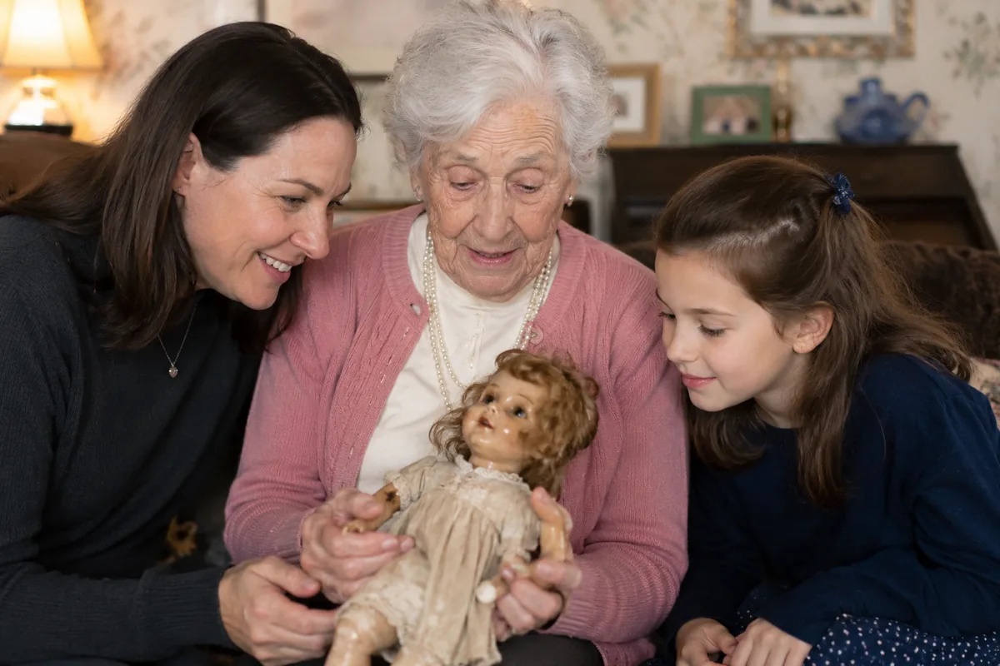

Two people can share one decision and need different evidence.
The resident journey preserves autonomy and lifestyle continuity. The adult child journey reduces uncertainty around care, timing, cost, and family coordination.
A planned independent living move
The resident initiates and decides. Family members advise, research, or join tours. Education is about loosening the stay-at-home default through peers, not pressure.
What moves the resident forward:A friend’s story, an invitation to an event, time with residents on the tour, a second visit, and a clear cost plan.

EducationSolutionSelection
How to read the map. The stages are sequential, but people do not consume information in a straight line. The connected path shows a decision process, while each card identifies the mindset, interactions, proof, and key trigger most useful at that stage.
InteractionsDigital self-education and human conversations both shape the journey.
ContentEvery asset is paired with the channel that delivers it.
EngagementPresence and authority change across stages and between personas.
SiriusDecisions Buyer’s Journey Map
The detailed map connects the six decision stages to digital and human interactions, content, delivery channels, and the persona’s changing presence and authority. Use the persona tabs above to switch maps.
Assessment of Benchmark’s current materials
Benchmark already has strong proof for much of the journey. The largest opportunity is not more generic content, but clearer orchestration by persona, stage, trigger, and decision role.
Already aligned or duplicative
Resident quote ads already support autonomy, connection, purpose, and peer proof in the resident journey.
Brochures and sell sheets already explain care levels, personalized support, dining, programs, and the community experience.
Family Contact Liaison, digital updates, Mind & Memory communication, and Financial Concierge already address adult child reassurance.
Tour calls to action, resident stories, community leaders, awards, and community-specific brochures already supply selection-stage proof.
New value in the recommendation
Separate resident and adult child journeys begin at the first inquiry rather than sharing one generic contact path.
Adult child creative speaks directly to care fit, timing, costs, family alignment, communication, and the parent’s preferences.
Progressive inquiry records who searches, pays, influences, and approves, then carries that context into calls and tours.
Lead scoring combines inquiry, behavior, counselor, and tour signals without treating missing information as negative.
AI and online safety events create a pre-need reason to visit while reinforcing Benchmark’s role as a trusted local guide.
A digital cost comparison experience extends Financial Concierge earlier into the search.
Potential conflicts to resolve
Resident ads use both 9 and 19 daily associate interactions. Use one verified number.
The internal 75% adult child “Prime Prospect” allocation is a planning segment, not evidence that adult children hold 75% of final authority.
Adult child targeting must not diminish resident autonomy, especially in planned independent living searches.
Care and cognitive signals should route information, not determine lead priority, eligibility, or service access.
AI personalization and family updates require resident-controlled consent, clear data provenance, and privacy limits.
Brand guidance prefers “feeling of safety” and personal language, while some care materials use more clinical or security-led wording.
Assessment based on Benchmark onboarding, brand essentials, community brochures, assisted living and memory care sell sheets, respite and healthcare capability materials, and the supplied resident and memory care ad series.